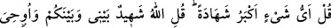
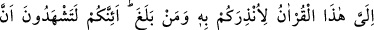
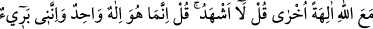
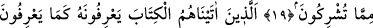
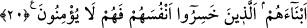

PEYGAMBERLİĞİN DELİLLERİ
19. De ki: Hangi şey şahadetçe en büyüktür? De ki: (Hak peygamber olduğuma
dair) benimle sizin aranızda Allah şâhittir. Bu Kur’an bana, kendisiyle sizi ve
ulaştığı herkesi uyarmam için vahyolundu. Yoksa siz, Allah ile beraber başka
tanrılar olduğuna şâhitlik mi ediyorsunuz? De ki: “Ben buna şâhitlik etmem.” “O
ancak bir tek Allah’tır, ben sizin ortak koştuğunuz şeylerden kesinlikle uzağım” de.
20. Kendilerine kitap verdiklerimiz onu (Resûlullah’ı) kendi oğullarını tanıdıkları
gibi tanırlar. Kendilerini ziyan edenler var ya, işte onlar inanmazlar.
Rivayet edilir ki, Kureyşliler Rasûlullah (s.a.)’e şöyle dediler: Ey Muhammed, biz
yahudi ve hıristiyanlara senin peygamberliğini sorduk. Onlar kitaplarında senden
bahsedilmediğini, senin özelliklerinin bulunmadığını söylediler. Bize senin Allah’ın
Rasûlü olduğuna şâhidlik edecek birini göster. Çünkü onlar seni inkar ettiler.”
Bunun üzerine Allah Teâlâ bu âyeti indirdi ve Habibi’ne şâhidlik bakımından hangi
şey daha büyük olduğunu sormasını emretti.
“De ki: “Benimle sizin aranızda Allah şâhittir.” Benim doğruluğuma o şâhitlik
yapmaktadır. Şâhidliğin en büyüğü, O’nun şâhitlik etmesidir. Yaratılmışların şâhidliğine
göre O’nunki en yücedir. Çünkü yaratılmışların şâhidliği ve bilgisi eşyanın hakikatını
tam anlamıyla kuşatmaktan uzaktır. Cenab-ı Hakk’ın ilmi ise bütün varlıkların hakikatını
ihata eder.
Allah Teâlâ, Hz. Peygamber (a.s.)’a müşriklere cevap vermekle kendisinin
görevlendirildiğini, onların başka bir cevap vermeye muktedir olmadıklarını bildirmek
üzere bizzat onun cevap vermesini emretmiştir.
Risalet davamda doğru olduğuma şâhit olmak üzere “bu Kur’an bana” Allah
tarafından “vahyolundu ki, onunla sizi” yani Kur’an indiği vakit hayatta olan insanları
ve kıyamete kadar “ulaştığı herkesi uyarayım.” Kur’an’da bildirilen cezalarla sizi
uyarıyorum.
Muhammed bin Ka’b el-Kurtubî der ki: “Kur’an kendisine ulaşan herkes, sanki
Muhammed (a.s.)’ı görmüş ve dinlemiş gibidir.”
“Siz, gerçekten Allah ile beraber başka tanrılar olduğuna şâhitlik ediyor